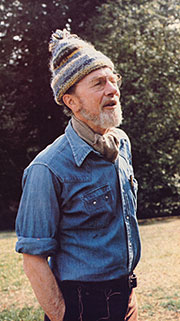
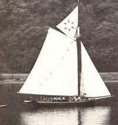
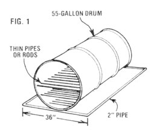
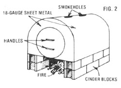

FRANCES MOORE LAPPE FIGHTING THE WORLD HUNGER MYTHS
For an individual who dislikes labels, singer/composer/author/social activist/environmentalist Pete Seeger has accumulated a goodly share during his 63 years. ("Some labels I'll accept . . . " he admits. "I'm a musician, I'm married, and I'm a U.S. citizen.') Born in New York City in 1919, Seeger has spent most of his life trying to get people to work together toward the common goal of making this world a better place to live. And he's chosen to communicate his message through music.
Today, Pete Seeger is-as one magazine profile aptly phrased it-the last active folk singer from the group of "originals" (people such as Woodie Guthrie, Jimmie Rogers, Lee Hays, and Leadbelly) who, during the first half of this century, reintroduced Americans to their rich heritage of native folk music and, in doing so, paved the way for the folk singers of the 60's. Seeger has, over the years, composed-or collaborated with others on-some of this country's best-known songs . . . including such titles as "Turn, Turn, Turn"; "Where Have All the Flowers Gone?", "If I Had a Hammer", "Kisses Sweeter Than Wine"; and "We Shall Overcome". As a soloist, as a member of the Almanac Singers, and later as one of the Weavers, the now slightly balding banjo-picker has recorded more than 80 LP's.
Despite Pete's noteworthy musical success, however, he and Toshi-his wife of 39 years-continue to follow the simple lifestyle to which they're accustomed. They live in the small, wood-heated log cabin they built by themselves (for $900!) back in 1949, and Pete still uses his music-generally playing for free at benefit concerts-to organize people to fight for the causes he believes in . . . just as he's done for over 40 years.
Whether his voice was being heard in support of the labor movement in the 40's, for civil rights since the 50's, or on behalf of environmental causes since the 60's, Seeger's actions have always mirrored his concerns. He is quick to note, in fact, that he became a full-time folk singer almost inadvertently, with music simply meshing with-rather than dictating-his lifestyle. Although his parents were both professional musicians, Pete intended to work in journalism, but soon discoveredafter dropping out of Harvard, in 1938, to knock on the doors of the publishing world-that there were no jobs to be had, so he turned to his musical talents in an effort to earn his way.
Then, in 1940, after spending part of the previous year working for folklorist Alan Lomax in the Library of Congress, Seeger met Woodie Guthrie . . . and the two singers headed west to learn about their country's people and music. It was during this searching period that Pete decided to use his music to help people organize in efforts to change their lives for the better. In response to this inner voice-with the U.S. not yet free of the Great Depression-Seeger and Guthrie formed, in 1941, the Almanac Singers . . . and used their music to encourage workers to form unions. (They also joined the American Communist Party . . . which the songster then believed was working to help folks secure jobs.)
The Almanacs' achievements were brought to a close in only a year's time, however, when the members went their various ways as part of the war effort. Upon returning to this country after the conflict, the singers found that the unions-scared by the threat of the Cold War-no longer wanted to even hear their "radical" songs. Then, in 1952, the three-year success of the Weavers-a group Pete had formed with Lee Hays, Ronnie Gilbert, and Fred Hellerman-was effectively ended when Seeger was labeled a Red (because of his previous union activities and his affiliation with the Communist Party) and his records were blacklisted.
Nevertheless, Pete continued to sing his songs, promoting civil rights and other causes, on college campuses and wherever else he could find an audience. And in 1967, when the blacklisting was finally withdrawn, Pete had already begun singing for yet another cause: the environment.
You see, after reading Rachel Carson's Silent Spring in the earls 60's, the musician realized that the world in which he had been fighting for peace and equality was in danger of becoming little more than a polluted wasteland. So for the past 15 years Seeger has applied his energy closer to home . . . namely, to the task of cleaning up the Hudson River that flows past his door. One result of his efforts (and those of the thousands of volunteers who have joined Seeger's crusade) is the Clearwater, a full-sized replica of a nineteenth century sloop, which-since 1969-has sailed up and down the river, holding environmental education programs both on deck and on shore, and has been responsible, for initiating much of the cleanup that's taken place along the Hudson and surrounding waterways.
On an exceptionally warm, sunny morning last March, before Pete played at a benefit concert in Asheville, North Carolina (the same city where, in 1935, he first heard the five-string banjo and fell in love with southern string music), one of MOTHER's staffers had the opportunity to talk for several hours with the musician/social aetivist/environmentalist. While strolling on the grounds of an old farm (continually picking up bits of litter as he walked), Seeger spoke of our society's present-day predicaments . . . often breaking into song to emphasize particular thoughts. As associate editor Emily Stetson soon found out, Pete Seeger is as actively concerned with the problems facing America today as he was with those of the 40's, 50's, 60's, and 70's. In fact, before he'd even been asked the first question, Pete began discussing his vision of the plight of our earth, and of the urgent need for the human race to meet on common ground and begin solving some of its problems.
What follows is the edited transcript of that interview and of subsequent conversations. We think-whether you agree with all of his political views or not-you'll enjoy reading the thoughts of this inspiring individual who serves as an example of how one person can make a difference in the way the world works . . . simply by matching his or her actions with his or her beliefs.
SEEGER: I'd like to start this discussion by explaining my own prejudices . . . so you'll know where I stand. First of all, I think there's maybe less than a 50% chance that the human race is going to be around a few hundred years from now. I believe that only the most starry-eyed optimist imaginable would be able to assume that the U.S.A.-that the world-could continue on its present course for long.
PLOWBOY: I'm surprised to hear that you have so little hope!
SEEGER: Well, admittedly I'm a tangle of contradictions, just like every other human being. In fact, I actually consider myself an optimist, because I think there is a slim chance that the human race will survive. I was born 63 years ago, in New York City. Most of my ancestors were from New England. I've got a Dutch great-great-grandmother and a German great-great-grandfather, an Irish great grandmother and a French great-grandfather, and who knows what else is sprinkled in there under the sheets. My children are half Japanese, and I've got grandchildren who are part Puerto Rican and African and Asian. My home is in the Hudson Valley. I was born there, and my grandparents lived in Putnam County. I live right near that site, in Dutchess County. And why-I'm sure you're wondering-do I mention all this personal history? Well, I do so because I'm convinced now, as never before, that the world is going to be saved-if it is-by people who fight for their homes.
PLOWBOY: Isn't that the concept behind the environmental awareness organization that you helped start in the Hudson Valley . . . to get the people who live along the Hudson to save their river?
SEEGER: More or less. When some other Hudson Valley residents and I started the Clearwater group, more than 15 years ago, the idea was to find a beautiful old boat-not just any craft, but an old cargo sloop like the ones that sailed the Hudson in fleets of 400 or more a century ago-and take it up and down the river, stopping at every town along the way. We figured that in order to keep the Hudson from becoming a permanent sewer, the local people would have to learn to love the river again, to come down to the water's edge and look at it closely and-in effect-say, "Gee, this river is a mess. We ought to get together and do something about it."
PLOWBOY: But where in the world did you find a cargo sloop?
SEEGER: Well, at first we tried to locate an old boat that we could restore, but we soon discovered that they'd all apparently rotted away. I hunted around Long Island Sound for an original Hudson River sloop, and the old-timers would say, "Oh, there's one 30 feet away from you," and I'd look around, and they'd add, ". . . straight down. Sunk about 50 years ago." We finally gave up the idea of reclaiming an old boat and decided that we'd have to build a new one.
Unfortunately, we quickly discovered that the yachtmakers near New York wanted $300,000 for their labors . . . but up in South Bristol, Maine, we found a seasoned old shipbuilder named Harvey Gamage. Harvey said, "Why yes, I've built dozens of boats like this. But why do you want an old-fashioned sloop? Oh, you want to, clean up pollution? You really think it can be done? Well, in that case I'll build you this boat for about $150,000.".So, working from blueprints prepared by naval architect Cyrus Hamlin, he built the Clearwater-the 25'-wide, 76'-long sloop with a mast reaching up 106' and carrying the largest mainsail in the world-out of 100 tons of oak. He put the vessel together with great big galvanized steel spikes, using skills and hand tools that are hard to find in much of the country nowadays. In 1968 the keel was laid, and in '69 the Clearwater started sailing.
PLOWBOY: As fair as the price seems to have been, $150,000 is no small sum for a newly formed community group to come up with. How were you able to pay for the boat?
SEEGER: Thousands of people became involved in the project, and they contributed their time and money to help make the idea a reality. At present, in fact, the Clearwater organization has over 4,000 dues-paying members. And in those early days we raised $30,000 in a month . . . simply by giving concerts and holding bake sales along the water's edge, all the way from Maine to New York.
PLOWBOY: How did the public at large first react to the old-time sloop?
SEEGER: When we finished that first sail down to New York City, a lot of people said, "Oh, those hippies will have some fun, and a year from now that boat will be sunk or sold." Well, it's now 13 years later, and today the Clearwater is sailing better-and keeping, busier-than ever. Her captain is Cate Cronin, a young woman from Maine. Cate and her crew-a group that includes environmental educator Steve Stanne-have taken thousands of schoolchildren out and instructed them in sailing, chemistry, biology, and the art of saving the earth.
Adults have visited the vessel, too. We've had tens of thousand, of people on board over the years . . . and through the annual tw o day Great Hudson River Revival festivals at Croton Point Park. Clearwater's environmental action program, and the network of Clearwater-inspired neighborhood sloop clubs that have formed along the Hudson, we've reached even more folks. Nowadays, conservatives and liberals alike come down to the waterfront, lock around, and say, "Yep, the river could be clean, it could be nice." And the river is becoming cleaner. We still have a long way to go, of course. A lot of damage has been done, and it may take decades-or longer-to correct it. At the moment, in fact, one of the action, we're pushing for is to have the PCB's that the General Electric plants dumped in the river years ago dredged from the upper Hudson.
PLOWBOY: The Clearwater, then, is not only a sloop that serves as a reminder of what the river was and what it could be again, but is also the core of an organization with an in-depth environmental education program and an aggressive community action group.
SEEGER: And the Clearwater is almost the antithesis of the usual concept of a yacht. As you know, most large sailboats are rich folks' toys, and many wealthy people buy such boats so that they can go out someplace quiet where the telephone doesn't ring, and where they can get a little peace away from the hassles of life on shore. We Clearwater folks, on the other hand, take the problems of the shore out with us! For instance, we invite both polluters and antipolluters out on a trip and say, "See this river? What are we going to do about it?" . . . and we get the arguments going.
PLOWBOY: That's a very direct approach. But doesn't that "oil of confrontation tend to alienate one side from the other?
SEEGER: I'm convinced that it's impossible to have education without controversy. People who think that's false are going to find themselves trapped . . . as the Inquisition was trapped or as the Soviets, with their purges, have been trapped. We learn from our enemies. As Ben Franklin put it, "Love your enemies . . . they point out to you your faults." So, for example, even though I consider the Ku Klux Klan a cancer on the face of America, I don't encourage anyone to smash the Ku Klux Klan. I don't think it would do any good. Instead, we need to confront such people and shoe them what a dead-end street racism is.
Getting the controversy out is only the first step, though. You can drown yourself in words-and here I am talk, talk, talking right now-but I'm convinced that the saving of this earth won't be accomplished with words, but with actions!
PLOWBOY: Can you be more specific?
SEEGER: For one thing, I believe that some of the best actions, focus on food. In fact, I've learned that it may be the greatest message-bringer of all. Gandhi, you know-the great Indian leader-said, "To the millions who have to do without two square meals a day, the only form in which God dare appear is food." And although there's certainly a difference between our typical audience and the poor whom Gandhi was discussing, one of the main thing that has helped clean the Hudson is the fact that we serve good food at our Clearwater festivals in the various towns. It's true, we do also sing some songs, and we occasionally even make a speech or two, but there's not much speechmaking going on. What we do have is lots of good food.
PLOWBOY: What do you usually serve?
SEEGER: We have a huge iron cauldron, and we make what we call stone soup. You likely know the story about this dish: In the tale, a soldier comes into a small village and-after being refused foodoffers his dinner of boiled stones to all the townsfolk. Gradually, each of those formerly stingy people contributes carrots, potatoes, meat, seasonings, or whatever to the broth . . . producing a truly delectable stew. Well, we printed the tale in our local newspaperit's an old, old folk story-and the symbolism of it came home to my town. Clearwater comes to Beacon once a year, and every year my wife and volunteers serve stone soup to over 1,000 people, free of charge.
We also serve strawberry shortcake . . . in fact, the festival is called the Annual Beacon Sloop Club Strawberry Festival. After three days of picking strawberries in the June sunshine, folks gather at the river to hull the fruit, whip cream by hand, and bake biscuits in two oil-drum ovens made especially for this occasion. I used to joke that lots of people are better banjo-pickers than I am, but nobody can make better strawberry shortcake! [EDITOR'S NOTE: See the accompanying sidebars for the Beacon Sloop Club's strawberry shortcake recipe and instructions for building the ovens.] And before the afternoon is over, we dish out close to 2,000 servings of the dessert.
PLOWBOY: Two thousand! That must be enough to feed a goodly portion of your local population. And since the Strawberry Festival is just one of many gatherings held by various sloop clubs up and down the Hudson, I imagine the Clearwater movement is reaching a tremendous number of people.
SEEGER: We are making an impact, and many other environmental groups have joined forces with us, but I think it's extremely important to keep in mind that we still have the huge job of bringing different kinds of people together over environmental issues. It's easy to reach the 3 or 4% of the population that's already actively involved in ecological issues, but what we've got to do is to reach out to 10 or 20%, and then try for 50 or 60% of the population. No movement is truly effective until it touches what I call the "Main Street audiences": black and white, rich and poor, male and female, radical and conservative.
This year's Clearwater Revival was our biggest crowd yet-over 17,000 tickets were sold-but I still feel we aren't getting the message out as well as we could. Every time we put on a big festival, we try to figure out ways to reach the people in the community who haven't come down to see what's going on. Is there some kind of music, dancing, information, or other attraction we're not providing that would bring them in? We want our festivals to represent the entire scope of a community. And I think this problem of involving all sectors of the population is true throughout the environmental movement.
PLOWBOY: I agree . . . and it's a problem not only of getting all sectors in a community involved, but also of involving communities on a national level.
SEEGER: Working out the balance between the local, the national, and the international is perhaps the big job we all have ahead of us. Rachel Carson, in Silent Spring, said that there's really no solution in the long run but international laws internationally enforced. Well, how are we going to get those? It's not going to be easy. We need to reach people by the millions, by the tens of millions. Meanwhile, though, we've got to work on the local level. We each live on several different planes: For instance, we speak one language when talking to a three-year-old child, another when conversing with our colleagues, and still another if we have to stand up in church and lecture from the pulpit. And it should also be possible for us to find ways to communicate internationally at the same time that we're sharing ideas locally.
The Sierra Club, for example, was originally intended to be a group of people dedicated to saving the California mountains, but now they say, "We're a regional organization with international concerns." I think that's a very good phrase. Another way of saying it is this: Our homes are going to be saved by people who fight for the world . . . but the world is going to be saved by people who fight for their homes.
Our homes are going to be saved by people who fight for the world... but the world is going to be saved by people who fight for their homes.
PLOWBOY: Before we can begin to effect change on a national or international level, then, you feel that we need to make the local environmental issue a matter of crucial importance to the people who live in each neighborhood.
SEEGER: Yes. Clearwater began when a handful of citizens became concerned about the river flowing past their back doors, but its concerns today include the entire Atlantic Coastal Zone and other issues that still have to do with the condition of our environment but may not be directly related to our waterways at all.
PLOWBOY: What steps would you recommend that an individual take in order to involve him- or herself in local concerns and begin having an impact upon the neighborhood issues?
SEEGER: Sometimes it's possible simply to join established organizations, but often-in order to get the proper programs underway-it's necessary to start a new group. It might be a political club, an ecology group, or perhaps a new garden club that concentrates on raising salad ingredients instead of prize roses. When you do get a number of people together, you'll find that you can accomplish things that you could never do alone. You might go slower in some ways, it's true . . . you know the old saying: "He travels fastest who travels alone." But sometimes when you travel quickly, you don't get to the right place. Those who travel slower-and do so together-often move in a better direction and actually reach their destination sooner.
PLOWBOY: Has this "slow but sure" approach been typical of your experience when tackling issues with the Clearwater folks?
SEEGER: Yes, we've found-in working with the Clearwater clubs on the river-that, slow or not, it's best to function by consensus as much as possible. We vote on our courses of action, but if there's a member who strongly feels that a polled decision is wrong, we encourage him or her to speak up. And sometimes we've even said, "Now wait a minute . . . it's true that the majority has spoken, but there's a real minority here who think the majority's conclusion is mistaken. Suppose we table this issue until we can reach a better agreement. Let's argue it back and forth for a month or so, and then take another vote at the next meeting and see whether we can reach a consensus." In the past, you see, I've watched votes used as power plays all too often, with people going around counting hands and saying, "If we can get just one more vote, we've won." The only "we" I think of as "we" is the whole poor damned human race. And whenever I sing "We Shall Overcome", that's who I'm thinking of.
PLOWBOY: Once a person has formed an organization of like-minded individuals, then, how does he or she go about convincing, say, an industrialist who's dumping toxic chemicals into a river-or a factory worker who depends on a paycheck from that company-to take steps to stop polluting the water?
SEEGER: Well, I've frequently joked that the price of libery is eternal publicity. Sometimes all an individual needs to do is publicize an issue in order to effect change. Often, for instance, when people in nearby towns find out what awful substances actually are going into their river, the manager of the dumping plant will suddenly find his own children asking, "Dad, what are you doing? Don't you know that we like to swim in that creek?" I've known factory managers to spend millions of dollars on cleanup projects as a result of information they've received from their families. So I don't ever rule out the possibility that a factory owner or the stockholders of a company may change their minds on the basis of a bit of publicity.
PLOWBOY: And if that doesn't work?
SEEGER: Then we've got the courts. Going through the legal system takes money, of course. Justice is something that's available to every person . . . if he or she can afford it. I know this is true, because I was once sentenced to a year in jail for contempt of Congress as a result of my refusal to cooperate with the House Committee on Un-American Activities. It cost me over $15,000 (and that didn't include a lawyer's fee . . . he was working for nothing) just to appeal the decision. I was eventually acquitted by the appeals court, which agreed with me that the committee's whole line of questioning was unconstitutional. So we do have the courts . . . for those who can afford them.
PLOWBOY: How useful do you think petitions are?
SEEGER: Oh, petitions can be extremely effective. Right now the Clearwater is distributing a petition in an attempt to speed up work on the sewage plants along the Hudson. Some 15 years ago, the federal and state governments started building such facilities throughout the country, because it was becoming quite clear that every river in America would soon be little more than an open cesspool if such steps weren't taken. Ten years ago new amendments to the Clean Water Act were passed, and the completion of the sewage facilities was slated for the late 70's or early 80's. Well, we're now in the early 80's . . . and the current administration is predicting possible completion sometime in the 1990's. If that gang in Washington stays there, I don't think these sewage plants will be built until the 21st century!
During 1981 the federal government spent $3.8 billion to upgrade and complete sewage treatment plants throughout the country. However, this year more than a third of that allotment has been cut, leaving $2.4 billion-or 3 cents per day per person-to be spent on a significant portion of our future water supply.
The Clearwater petition points out that Americans each spend 28 cents a day for soda, 6 cents a day on video games, and $2.50 a day on national defense . . . and that it would cost less than a nickel a day to finish those sewage plants on time. We say it's worth that nickel to see that rivers and lakes in every part of the country-and this could happen in cities as well as in rural areas-become swimmable. There are miles of beautiful beaches right along the Hudson River that aren't used now simply because the water is too dirty to swim in . . . including some on Staten Island and along the Palisades. Once the sewage plant off Manhattan and the one in Brooklyn are finished, it won't be long before those can open up. In fact, some of the mid-Hudson area beaches have already reopened, and in locations where-when the Clearwater first sailed in 1969-lumps of raw sewage used to float in the water. So gains can be made through petitions, legal attacks, and publicity.
PLOWBOY: How about writing letters to elected officials? Can that course of action-which has become something of a cliché-make a significant impact?
SEEGER: Believe it or not, letters are tremendously important. Every politician I've ever met admits that correspondence has in fluenced his or her decisions. Even if letters aren't all read, entirely, you can be sure that at least they're counted. Now I admit, if you drop a line to President Reagan, there's probably only one chance in a million that he'll ever see it. And if he does see it, I myself doubt that he'll do very much as a result. But letters do get tallied up. There's no politician-not even Reagan-who isn't aware of the burden of future elections.
And while we're on that subject, I think one of the biggest tragedies in America is the fact that large numbers of people believe elections don't matter. Imagine . . . 48% of the population didn't even bother to vote in the last Presidential race, and I think that's a national disgrace. I don't care if you vote for Mickey Mouse: Go push that lever down and let people know you're alive. Because if you're not down there voting, you might as well be punching a needle into your arm. I mean it. If you're not down there pushing that lever, you might as well be sniffing that white powder, or be so drunk that you don't lose only a weekend, but actually a lifetime. If you're not pushing that little lever down, you're not fulfilling the hopes of your own grandparents and greatgrandparents who struggled and gave their lives so that we could have the right to vote.
PLOWBOY: Frankly, I'm a little surprised that you place so much value on voting . . . that's certainly not a common point of view these days.
SEEGER: Well, elections are so important that one of the themes of next year's Clearwater festival will be the need to register folks to vote. Remember, all of us share the right to speak through the ballot box, and voting serves as a point of unity from which we can go on to solve such problems as the pollution of our waterways and air.
PLOWBOY: It's going to be difficult to convince that abstaining 48% that their voices could make a difference.
SEEGER: That's true. Some people may say that you can't fight City Hall . . . but don't you believe them. As a matter of fact, there's a song I sing about the ability of the individual to make a difference in the community. It concerns a little railroad station near my home that was closed down ten years ago. But by gosh, back in the summer of 1981 it was opened up again . . . because of a simple petition campaign. And I sing:
Here's to the people who didn't give up!
Pass that petition around!
Who knows, who knows, with spirit like that
We could have progress the world around.
Hooray! We turned the clock back in one more little way.
Hooray! We turned the clock back; that's progress for today.
Hooray! We turned the clock back;
There's a little more hope now, and that's a fact.
And when the nuclear maniacs get the sack,
That'll be the clock-back day, hooray!
That'll be the progress day.
PLOWBOY: Let me get this straight: You believe that-despite the sometimes overwhelming obstacles we're faced with in this country-we can change our lives for the better and improve the environment through efforts that work within the American system of courts, letters, petitions, and voting?
SEEGER: Our political system has lasted 200 years largely because of that extraordinary addition to our Constitution, the Bill of Rights. Without it, I don't think the American government could have lasted a generation. But the Bill of Rights saved us from the Alien and Sedition Act in 1798 . . . it helped us abolish slavery 65 years later, it supported people in their fight for a shorter working day and for unions and for extending the right to vote to all people. There have been battles in every state, of course, but it's that Bill of Rights that's always saved us. Maybe it could be improved upon, but it sure is awfully good. And this is why people are willing to stay here in America, even with all of its problems.
PLOWBOY: You've certainly had your share of clashes with our government in the past, and yet you haven't-as far as I know-ever considered leaving . . . even when the House Committee on UnAmerican Activities branded you a Communist.
SEEGER: Well, I am a communist. But let me expand on that statement. When I was a boy, I read every single book by naturalist Ernest Thompson Seton. Seton held up the Indian as an ideal . . . for strength and dignity, morality, selflessness, and living in tune with nature. Anthropologists call the period of Indian history that he described "tribal communism" . . . I like to think I'm about as much a communist as the average American Indian was.
PLOWBOY: Then you must believe that your type of communism is compatible with the American system.
SEEGER: Oh, sure. It involves nothing that couldn't fit within the Constitution. The core of the Communist ideal is still valid . . . it says-put simply-"no rich and no poor". But in this country we've got some people with more food than they can possibly eat, and others are starving to death. Some individuals get all the schooling they need, and other folks aren't getting enough. Some people have more work to do than they can comfortably handle, while others are without jobs. We have imbalances all over.
Now perhaps we could alter the income tax rules so that some people won't get extremely rich while others are so destitute. However, simply changing the distribution of wealth isn't the answer. I realize that even if everybody had the same amount of money-if we all had enough to buy food, shelter, and clothing and enough extra so we could buy guitars or cameras or sports cars-we'd will have to face the fact that technology produces a stratified society in which some people are much more powerful than others. And how do you share power? How do you share information when information is power? This is the real imbalance. It's as though technology not only threw nature out of balance, but threw our society out of kilter, too.
PLOWBOY: Is that why your song equates a "clock-back day" with "the progress day"? Do you feel we need to be suspicious of advances in technology?
SEEGER: I can only say that I'm more distrustful of technology now than I have been at any point in my life. I honestly believe that if I'd been around when some person was inventing the wheel, I'd have said, "Don't, don't. Life may be nasty, short, and brutish . . . but you just can't know where technology is going to lead." Well, we do know where it's leading now . . . it's heading us toward disaster.
I'm convinced that most scientists are members of one of the most dangerous religions in the world: a sect which believes that the infinite accumulation of knowledge is all to the good. And there's no proof of this . . . it's really a sort of dogma. Furthermore, there's considerable evidence that their blind faith may result in the extinction of the races.
PLOWBOY: Is this why you believe that humanity may not be around a few hundred years from now, as you said earlier?
SEEGER: Well, of course I don't actually know whether the end could come in 50 or 100 or 500 years, but I'm convinced that, unless we persuade scientists that their religious belief in knowledge is dangerous, there can't be much hope for the world.
However, I also have my own faith. I have a faith that, sooner or later, the Pope and all Catholics will realize that they have to allow some form of parenthood planning . . . Moslems will agree that women have the right to live as full human beings . . . and scientists will understand that there are some kinds of information toe dangerous to explore.
PLOWBOY: Such as genetic engineering?
SEEGER: That's right. Now I admit that such research could bring about some wonderful advances. There are, for instance, genetic ailments such as Huntington's disease . . . which killed Woodie Guthrie and now threatens his son Arlo, as well as thousands of other people in this country. It's possible that work with the DNA molecule might help us find out what causes Huntington's disease and how to eliminate it. But unless that sort of investigation is handled very carefully, sooner or later dangerous information will get into the hands of a modern Adolf Hitler. And think of what Hitler would have done if he'd had the knowledge for cloning and racial selectivity . . . it's horrible. Worse yet, we have to face the fact that there are people in today's world who think like Hitler, and some of them are in positions of power, too.
But genetic engineering isn't the only field that could be dangerous to explore. The development of toxic chemicals is another obvious example.
PLOWBOY: What you're saying about technology, then, is that we need to pursue the right kind of knowledge and we need to share that knowledge, before we can begin to change the imbalances that you see in our society.
SEEGER: The primary danger is the belief-common to many scientists-that all knowledge is of equal importance under any circumstances. I feel that the right knowledge at the right place and time is what's important.
PLOWBOY: But you will admit that technology is really a two-sided coin, won't you? On one side, for example, we have all the problems connected with nuclear power, and on the other side the boundless possibilities of clean solar technology.
SEEGER: I guess the idea of progress has been oversimplified. Someone will say, "We must be progressive . . . we must have hush toilets. Don't use the backyard privy anymore." Well, the backyard privy isn't the only alternative to the flush toilet. How about composting toilets or methane digesters? I think one of the most "progressive" events that's taken place in America in the last ten years is the rediscovery-on the part of millions of people-that it's fun to grow and cook their own food instead of opening a can from the supermarket. That sort of "progress" could make the next few years very exciting. We may be terribly near to the brink of death, but we're also on the verge of some of the world's most thrilling discoveries . . . and methane digesters and composting toilets-as mundane as they may appear-are among them.
Furthermore, here's where an organization such as yours has a wonderful job ahead of it: the task of teaching people in every neighborhood that they can grow their own food and that they can put a composting toilet right in their own homes. We need to reach the poor people who are thinking, "Gee, rich folks can afford to build a greenhouse and a passive solar home, but what can I do?" Well, the truth is that there's a hell of a lot more that such people can do . . . but most of them just haven't yet gotten the information. So we've got to give them the knowledge, for example, that will let them forage for wild foods-even in the city-and scrounge for building materials.
My wife and I built our log cabin 33 years ago for $900, and the roof is constructed almost entirely from packing boxes, which we scrounged off the streets of New York City. Until we painted it, you could look up at the ceiling and read "Made in Occupied Japan", "Military Government of Italy", and so on. We need to fill the newsstands with information about how people can be selfsufficient in their own communities and can be actively solving their local problems, whether the issues concern setting up sewage treatment facilities, providing better schooling or job opportunities, or simply building more energyefficient-and less expensive-homes.
PLOWBOY: When one considers the problems that face the world on an international level, the sum total can be all but overwhelming. But when one thinks of these problems as jobs that can be tackled at the local level, by communities everywhere, there does seem to be a glimmer of hope.
SEEGER: Well, this gets us right back to where we started. I do believe that there's a chance for the human race, and on that basin I call myself an optimist. The chance may be a slim one, but it exists.
There's a true story that I've recounted a good many times . . . a tale that I've never been able to write a song about. In 1959 a man in Niagara Falls, New York took a 5-year-old boy and a 17-year-old girl out for a spin in his little motorboat. A shear pin broke, I think . . . anyway, the boat's motor conked out. Then, while the man was bending down trying to fix it, the craft drifted beneath a barrier that was supposed to prevent pleasure boats from going over the falls.
When the threesome looked up, they suddenly realized their danger. The man quickly strapped the only life jackets he had-two of them-on the little boy, then the 17-year-old girl started swimming for shore with every ounce of strength in her young body. Well, the man's corpse was found five days later, battered among the splintered pieces of the boat. The girl, it turned out, had been about to be swept over the brink when a man who was having a picnic with his family heard her cry for help, and waded out in that fierce, rushing water to grab her hands . . . and she's living today.
The boy, with his two life jackets on, bobbed to the surface of the rushing torrent and was picked up by folks on a tourist boat who'd heard his screams. When they hauled him in, he said, "Boy, that's noisy. You could get killed doing that."
Now if that isn't a story for you, I don't know what is. It means "Who can tell?" That boy and his sister are living today . . . despite some pretty long odds. Maybe some of us won't live through the trying times to come, but let's not give up hope that life on earth will survive. Those who do make it, however, won't likely be a few fearful individuals who've moved off alone to the Rocky Mountains with their supplies. No, the people who survive are probably going: to be those who know how to grow their own food, how to build their own houses, and how to share that information with them neighbors. I'm convinced that survival in the future will depend upon learning how to share.
Many musicians I know follow the philosophy that says, "Fat, drink, and be merry . . . for tomorrow we die." And it's a perfectly valid philosophy, one that's held by millions of people. But I say, "Share the eats, share the drinks, be of good cheer, and if we work together, maybe tomorrow we won't die quite so quickly."
PLOWBOY: You've chosen to use your music for, and denote your life to, fighting and struggling for the causes you believe in. I admit I find it somewhat surprising that you've kept your optimism and sense of humor throughout it all.
SEEGER: Well, even Jesus said, "Be of good cheer," and the greatest songwriters I've known have been people who have had a wonderful sense of humor . . . folks such as Woodie Guthrie and Lee Hays. In fact, one of Lee's last songs was written to my wife, who loves to garden as much as he did.
If I should die before I wake,
All my bone and sinew take,
Put me in the compost pile
To decompose me for a while.
Worms, water, sun will have their way,
Returning me to common clay.
All that I am will feed the trees
And little fishes in the seas.
When radishes and corn you munch,
You may be having me for lunch
And then excrete me with a grin,
Chortling, "There goes Lee again!"
I think humor reminds us of our own contradictions and urges us to keep on going . . . if for no other reason, just to see what the hell will happen next.
EDITOR'S NOTE: If you'd like to support Clearwater's educational and environmental goals (and receive the monthly Clearwater Navigator), you can do so by enrolling in one of the following annual membership categories: student, $7.50 . . . individual, $20 . . . family $30 . . . or sponsor, $125.
In addition, if you'd be interested in supporting Clearwater's sewage petition campaign (which will continue through 1982), or simply would like to learn more about the organization, write to Hudson River Sloop Clearwater, Inc., Dept. TMEN, 112 Market Street, Poughkeepsie, New York 12601.
CLEARWATER'S PRIZE STRAWBERRY SHORTCAKE...
Now that winter winds are beginning to howl outside, the fruit desserts of summer are becoming only a memory in most folks' homes. However, we figured that when snowdrifts and below-zero weather keep you near the woodstove, just reading about the Beacon Sloop Club's Famous Strawberry Shortcake might help remind you of warm breezes and sunny weather. The following scaled-down version of the recipe will make eight hefty helpings of the tasty treat.
Just before dinner (not earlier!) rinse and hull 2 quarts of fresh, ripe strawberries. Then slice about 1-1/2 quarts of the fruit into large chunks (crushing the berries would make the sauce too juicy). Set the remaining whole strawberries aside to use later as decoration. If desired, sweeten the sliced fruit to taste (a few tablespoons of sugar or honey should sufficiently please your palate). Then store all the berries in the refrigerator.
Next, whip 1 pint of heavy cream, adding 1/2 teaspoon of vanilla and a little sweetener to taste as the cream becomes lighter. Then chill the topping.
Now, combine 2-1/2 cups of unbleached flour, 3 teaspoons of baking powder, 3 tablespoons of sugar, and 1/2 teaspoon of salt with 6 tablespoons of butter . . . and set the mixture aside while you grease a cookie sheet.
With that done, you can relax and eat your dinner. About 20 minutes before you plan to serve the dessert, though, light the oven . . . you'll want it to be medium-hot425° to 450°F-before you put the biscuits in.
Next, quickly stir a scant cup of milk into the flour mixture. The consistency of the batter should be much thicker than that for a cake, but not as dry as typical rolled biscuit dough. Spoon the batter onto the cookie sheet in eight 2" lumps, and pop the works into the preheated oven.
It generally takes 15 to 20 minutes for the biscuits to bake. When the dough has turned a golden brown, take the shortcake out of the oven and carry it to the table with lightning speed. Working as fast as you possibly can, slice a piping hot biscuit . . . insert a pat of butter between the halves . . . and place the cake in a serving bowl. While you're slicing the next biscuit, have a friend dollop a generous spoon ful of the sliced strawberries on top, followed by a great blob of whipped cream and a garnish of whole strawberries.
Then eat the treat right away . . . and discover the flavor of oldfashioned American strawberry shortcake.
...BAKED IN AN OIL-DRUM OVEN
After you've sampled the accompanying shortcake recipe (maybe rushing the season a tad-and sacrificing the quality of the dish a bit-with the help of some frozen berries), chances are you'll want to prepare several more helpings. You might even someday decide to serve the scrumptious dessert at a large gatheringsuch as a family picnic-or even use it as a basis for a fund-raising project. In any case, if you're planning to dish out more than 50 helpings of the taste treat, you'll find that the oil-barrel oven described here is extremely useful. . . and it's comparatively easy to build, as well.
To begin, weld a frame measuring 36" wide and as long as your barrel (Pete uses the 55-gallon size) from 2" nongalvanized steel pipe. Then cut the top off of a nongalvanized 55-gallon drum and weld the open barrel to the frame. Now, using the end of yet another barrel of the same size for raw material, fashion a tight door (it's best to crimp in the edges of the cover to assure a secure fit) and then weld on two strips of metal for handles. Next, weld three or four rows of level rods (you could use thin pipes for this task) inside the oven to serve as racks (see Fig. 1).
With all that done, cut two pieces of 18-gauge nongalvanized sheet metal to fit around the ends of the drum, and then trim out a large rectangle of sheet metal and bend it over the barrel. . . so that the entire apparatus forms an enclosed air space around the oven (as shown in Fig. 2). Attach the sheet-metal sections to the pipe frame and to each other, using tabs and screws or brazing. Then set the oven on a U-shaped, two-tiered row of cinder blocks.
To control the heat in the cooker, you'll need to cut two small holes in the top of the oven to serve as flues, and then fashion two pieces of metal that will allow you to adjust the smokehole openings. You'll also need to find a sheet of 19" X 30" metal to provide a means of draft control in front of the fire . . . a stick with a small can nailed on the end so that you can reach into the blaze and douse it with water (in order to lower the oven's temperature quickly) . . . and a small rake for pulling or pushing the coals to establish a more even burn.
Once you've assembled these items, build a small fire in the cinder block enclosure and try to achieve a slow, steady heat. You'll probably have to practice some before you're able to control the oven temperature adeptly . . . at first it's easy to get a scorching 600°F, but pretty danged difficult to hold it at 425°F
|
 STAFF PHOTO |
 Photo Courtesy of Husdon River Sloop Clearwater Inc. |
 |
|
 |
|
|